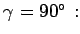
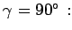
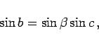
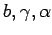
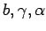

Inhalt Index DeskTop Bronstein

 Geometrie Sphärische Trigonometrie Berechnung sphärischer Dreiecke Rechtwinklig sphärisches Dreieck
Geometrie Sphärische Trigonometrie Berechnung sphärischer Dreiecke Rechtwinklig sphärisches Dreieck


Im rechtwinklig sphärischen Dreieck ist einer der drei Winkel gleich  Die Seiten und Winkel werden analog zum ebenen rechtwinkligen Dreieck bezeichnet.
Die Seiten und Winkel werden analog zum ebenen rechtwinkligen Dreieck bezeichnet.
Wenn wie in der Abbildung  ein rechter Winkel ist, dann heißt die Seite c Hypotenuse, a und b heißen Katheten;
ein rechter Winkel ist, dann heißt die Seite c Hypotenuse, a und b heißen Katheten;  und
und  sind die Kathetenwinkel. Aus den Gleichungen (3.191a) bis (3.205) folgt für 
sind die Kathetenwinkel. Aus den Gleichungen (3.191a) bis (3.205) folgt für 
|  | (3.206b) |
Treten bei bestimmten Aufgaben andere Seiten und Winkel auf, z.B. anstelle von  die Größen , dann können die erforderlichen Gleichungen durch zyklische Vertauschung gewonnen werden.
die Größen , dann können die erforderlichen Gleichungen durch zyklische Vertauschung gewonnen werden.